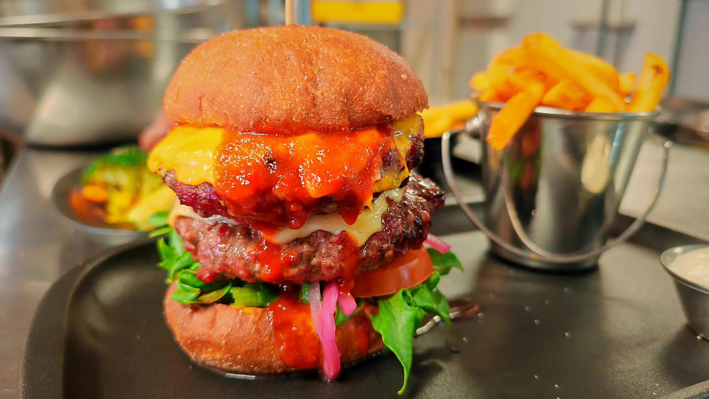
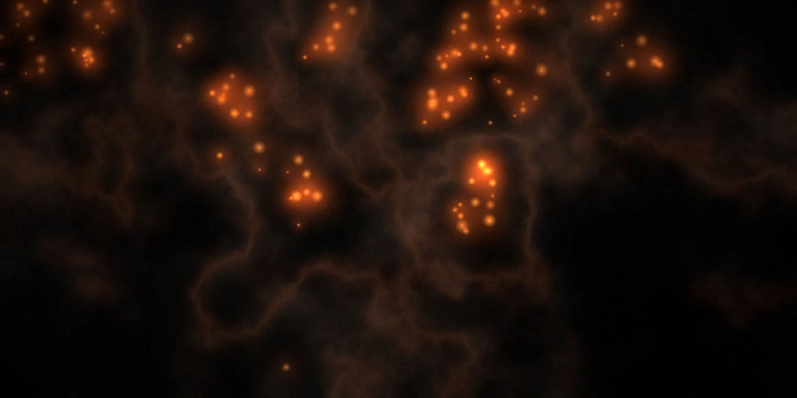

Puuhiilen maut
juhliin
Bistro Liekki tuo puuhiiligrillin maut myös juhliin ja tapahtumiin. Kerro tilaisuudestasi, niin suunnitellaan sopiva kokonaisuus yhdessä.
Kysy cateringista
Vuodesta 2016 · Talvikkitie 30, Vantaa
Puuhiiligrilli
Tikkurilan sydämessä.

Vuodesta 2016 lähtien Bistro Liekki Puuhiiligrilli on tarjonnut kodikkaan ja rennon ruokailuhetken Tikkurilan keskustassa.
Ravintolan ylpeys on puuhiiligrilli, joka huokuu aitoa savun makua jokaiseen annokseen.
Hiillos antaa lihalle rapean pinnan ja sen maun, jota kaasugrilli ei osaa jäljitellä.
Laajalta à la carte -listaltamme löydät puuhiiligrillin inspiroimia annoksia, burgereita, pihvejä ja muita Bistro Liekin suosikkeja.
10:30–15:00 Arkisin ma–pe

Tervetuloa viettämään aikaa Bistro Liekkiin. Varaukset onnistuvat helposti verkossa tai puhelimitse.
Bistro Liekki tuo puuhiiligrillin maut myös juhliin ja tapahtumiin. Kerro tilaisuudestasi, niin suunnitellaan sopiva kokonaisuus yhdessä.
Kysy cateringistaBistro Liekin lahjakortti sopii lahjaksi, joka jää mieleen — illallinen puuhiiligrillin äärellä tai lounas keskellä viikkoa.
LahjakorttiTikTok · @bistroliekki
Kuvaamme keittiöstä ja hiilloksesta TikTokissa — ruoka sellaisena kuin se syntyy.
seuraajaa TikTokissa
Seuraa meitäVideot aukeavat TikTokissa.